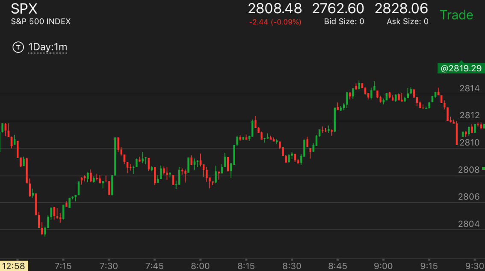

主要走势理论
- 两段走势是需要反转的最小的走势，主要走势则经常超过两段。
- 一个主要走势，需要很长时间建立。所以不必着急。
-
一开盘就连续上涨，或者下跌。可以建立一个主要走势。但是也要看后续的走势发展。
-
主要走势常常不是典型的两段走势，所以要看具体的走势。
- 主要走势不一定是一天最大的走势，只要超过两段走势都可以叫主要走势
- 主要走势不是每天都出现，但是也很频繁。有时候一天就一个主要走势。
- 主要走势的运动方式是不断回测支撑点，或者开始很慢，一旦运动开始，
就不会回测关键点。
主要走势理论
开盘后上涨，很快拉回
开盘后迅速大跌，建立上涨主要走势
开盘后冲高幅度不大，然后长时间缓慢震荡
上涨主要走势的上涨方式
开盘后第一浪上冲较大，然后缓慢上涨，不断回调填补真空
用两段走势来反转主要走势
第一浪快速大幅下跌建立下跌主要走势
TOP
第一浪快速大幅下跌建立下跌主要走势

图示：开盘后，从最高点开始迅速大幅下跌。这个不代表会反弹。它在填补真空后，开始大跌。形成下跌的主要走势。
TOP
用两段走势来反转主要走势
- 这样的走势通常是开始很慢的建立。用了很长时间，建立完成后，
出现一个两段走势后，结束主要走势。

图示：9：30出现了两段大跌后，缓慢的反弹。其实幅度不算很小。
但是时间很长。超过一个小时，用了90分钟来建立。这样就成了一个主要走势。
11：00宣布利率后，它先是大涨，然后休息一段时间，再次大涨。在高点走平很久。形成了两段走势。结束升势。
它第一段上涨后，回调幅度很大。而第二段上涨后，震荡幅度就小的多。11：40在最高点附近，进入更加小的震荡。
这个都是头部的特征。
图示：9：40它出现了底部加速的走势后，见底。快速反弹。然后再次走低。这个走势缓慢的
走低走了一个多小时。一方面为前面反弹过快而调整，也为未来大涨做准备。它在10：50出现了走平后下跌的走势，
也恰好填补了真空。大涨。这个大涨出现了两段上涨的走势。11：00开始的大涨，中间的调整时间只有20分钟，就开始第二浪
上涨。和前面明显有加速的样子。显得很强，然而却是上涨的结束。
TOP
开盘后第一浪上冲较大，然后缓慢上涨，不断回调填补真空

图示：开盘出现了弱第一浪走势，第一浪涨幅在4个点左右，比较大。但是也属于中间状态。它后面开始不断的反复出现高点。
每次都回调到了前面的支撑点，然后缓慢上涨，这样就成为一个主要走势。

图示：开盘后，第一浪稍微幅度比较大。后面一直不断缓慢的上涨。抵消了第一浪的效果。
建立时间很长。要想到这样的走势，不会因为一个大冲而反转的。7：45出现较大上涨幅度。但是它不会因此反转。而且它立刻回调，
走平很久。抵消了这个大涨的效果。这样的走势不断给做空的人以希望，以为要跌了。但是反而是在逐步建立坚实的上涨基础。
TOP
开盘后上涨，很快拉回

图示：开盘后，走平几分钟后，冲高，没有加速，就回调。
7：15回调结束。它第一次上涨，速度太快。被拉回，然后缓慢上涨，一举突破前面高点。这个准备时间很长，一旦发动
会很强大。
TOP
开盘后冲高幅度不大，然后长时间缓慢震荡

图示：开盘后，震荡，6：45冲高，幅度不大。震荡接近一个小时，
中间出现新高后，立刻拉回。说明处于升势。而且时间很长，说明是主要升势。
TOP
开盘后迅速大跌，建立上涨主要走势

图示：开盘缓慢走低，建立跌势。然后冲高，冲到和开盘差不多的地方，
大跌。从相对论分析，从开盘到6：45的跌幅都被拉回到原位。那么后面的大跌更加会被拉回。所以一定会涨，
这个会是一个主要走势的上涨。
TOP
上涨主要走势的上涨方式
主要走势常常不是典型的两段走势，所以要看具体的走势。不能看到两段就反向操作。

图示：7:10开始上涨，因为没有关键点可以利用。它是开始缓慢上涨。
7：30，然后上涨到了关键点2808.它稍微走低一些，似乎被它影响，结果一举突破。快速大涨。然后缓慢拉回，
在底部走平后，8：10再次快速上涨，再次拉回一部分。8：30开始一个5浪上涨。上涨结束。

图示：开盘走平后出现上涨，似乎是第一浪。拉回后，震荡很久，再次上涨。
要注意这个是主要走势，第二浪不是到头的表示。它虽然在高位走平几分钟，但是和前面长时间的回调震荡时间相比
还是很短的。所以不能算反转。它回调的位置恰好是关键点，而且在低点徘徊。说明是真的回调，而不是反转。
最后的反转是在高位走平长达一个多小时。这个时间超过了在前面低点的震荡时间。这个就是主要走势的反转。一旦反转，
也是主要走势。不会轻易停止。